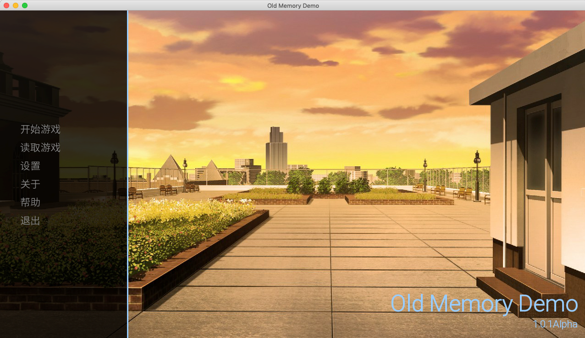

Old Memory
一部由兴趣驱使制作的视觉小说
原名：Old Memory
常用译名：？
类型：视觉小说
平台：Windows、MacOS、Linux、Android、iOS/iPadOS
分级：CERO-B（12+）
开发：Vanadiry
制作：Vanadiry
编剧：Vanadiry
音乐：Vanadiry、橙光素材库
美工：橙光素材库
引擎：Ren'Py
模式：单人游戏
发行：暂未发行

！！！：
因为一些原因，所有下载通道暂时关闭。具体开放时间未知。
Windows：OMDemo-1.0.1Alpha-win.zip 下载（35.2MB）
MacOS：OMDemo-1.0.1Alpha-mac.zip 下载（18.6MB）
Linux：OMDemo-1.0.1Alpha-linux.tar.bz2 下载（32.9MB）
公告：
暂时不提供移动设备的IPA（iOS/iPadOS）和APK（Android）文件的下载。
如果您是MacOS用户，您的系统可能禁止您直接运行程序，请您在系统偏好设置中允许其运行。
我啥也不会，因此，立绘和原画什么的用了一些素材。剧本和程序之类的是我做的！音乐我也稍微弄了一点，听着凑合。
关于多平台适配我没把握，但是Windows和MacOS肯定可以跑得起来。但安卓不建议用（
关于iOS/iPadOS，上传AppStore对我而言负担太大，提供IPA文件的话可能有很多人装不上去
其实应该谢谢人PY引擎的多平台适配（（（
引擎是开源的，我的网站大概也算开源的！我和引擎贴贴，你和网站贴贴！（错乱
其实是玩了Doki Doki Literature Club!和Tiny Snow想做的。期间还玩过其他一些，但是这两部印象最深！
瞎写的话到这里就没了，